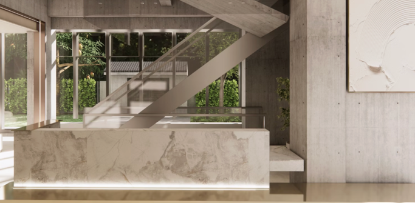

健康數據
Thoughtful care, continued with every visit. 專屬照護旅程
每一次的互動，都是更懂你的默契。
從初次諮詢、現場報到，到醫師問診與後續追蹤，吾青於您授權的照護範圍內，安全整合重要健康資訊，讓每一次就醫都能更加順暢且有效率。
透過智慧系統協助，醫療團隊能更完整掌握您的健康歷程、需求與身體變化，不必反覆說明相同問題，也無須從頭建立理解。每一次的諮詢與照護，都能延續前一次累積的重要資訊，提供更貼近個人需求的健康建議與照護規劃。
讓醫療不只是一次次獨立的看診，而是一段持續被理解、被陪伴的健康旅程。
Thoughtful care, continued with every visit.
At i5inity HEALTHY AGING, every visit builds on the last.
With your consent, we bring together the details that matter — your health history, concerns, and changes over time — so our team can understand you with greater clarity and continuity.
There is no need to start over at every appointment.
Each consultation becomes part of a more personal, thoughtful journey of care — one where you are seen, understood, and gently supported along the way.
Vision 吾青優勢
吾青以女性全生命週期健康為核心，陪伴妳在不同人生階段，找到最適合自己的健康節奏。
透過專業醫療團隊、智慧健康分析與個人化規劃，我們不只看見數據，更看見完整的妳。
從健康管理到日常照護，提供整合且專屬的健康方案，讓每一步改變都有方向。
陪伴妳回歸自己，成為更好的自己。
i5inity(Wu Ching), we are dedicated to supporting women's well-being through every stage of life.
By bringing together medical expertise, advanced health insights, and personalized care, we help you better understand your body, restore balance, and create a path to lasting wellness.
More than health data, we see the whole person behind it.
Through every transition, every choice, and every new chapter, we're here to help you find your own rhythm, reconnect with yourself, and thrive in your own way.

吾，是我。青，是一種狀態。
吾青陪妳在每個轉折中，找回內外的平衡。
您的健康，值得被完整看見。
「吾心所向 煥然長青」
My heart is set on timeless vitality